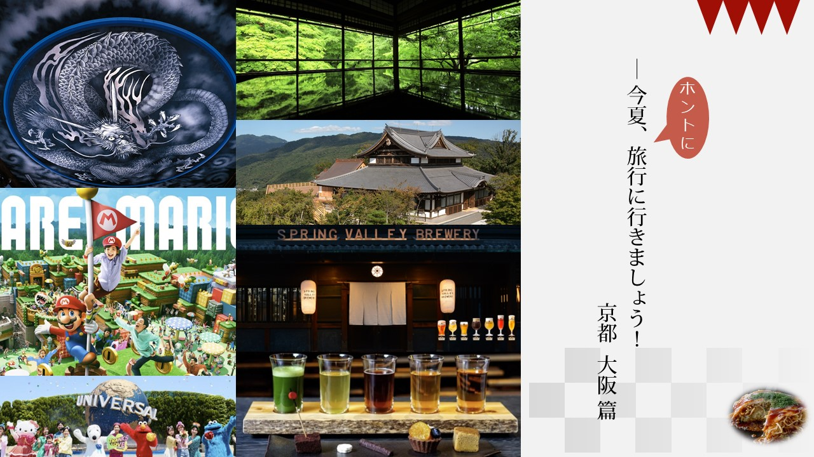

旅行概要
京都・大阪エリアで2泊3日の旅行しましょう。 京都の寺社巡りとUSJ！

旅行スケジュール
| Day | 時間 | 行き先 | 概要 |
|---|---|---|---|
| Day 1 | 朝9:00 | 東京駅 | 集合 |
| Day 1 | 9:30 | 新幹線 | 京都へ移動（所要時間: 約2時間） |
| 12:00 | 金閣寺 | 訪れる 見どころ: 金閣の美しい金箔張りの外観 豆知識: 正式名は鹿苑寺といい、北山にある禅宗の寺院。日本屈指の名勝として知られ、金閣が水面に映る景色は絶景です 入場料: 500円 |
|
| 14:00 | 銀閣寺 | 訪れる 見どころ: 銀閣の美しい木造建築と庭園 豆知識: 正式名は慈照寺といい、東山にある禅宗の寺院。銀閣の美しい木造建築と庭園は風情があり、四季折々の景色を楽しむことができます 入場料: 500円 |
|
| 16:00 | 二条城 | 訪れる 見どころ: 天守閣と庭園、歴史的価値 豆知識: 二条城は江戸時代に将軍の宿泊所として使われた城で、天守閣や広大な庭園が魅力です。また、二条城は幕末の重要な歴史的な出来事である「徳川家定公布の大号令」が行われた場所でもあります 入場料: 600円 |
|
| Day 2 | 朝9:00 | 清水寺 | 訪れる 見どころ: 清水の舞台と本堂の美しい景色 豆知識: 清水寺は京都を代表する寺院で、日本三大名水の一つ「清水」を祀っています。清水の舞台からは京都市街や四季折々の風景を一望でき、特に紅葉の季節には絶景となります 入場料: 400円 |
| 11:00 | 嵐山 | 散策 見どころ: 竹林の小径、渡月橋、天龍寺 豆知識: 嵐山は自然と文化が融合した風光明媚なエリアで、竹林の小径や渡月橋は特に有名です。また、天龍寺は嵯峨野の広大な敷地に建つ禅寺で、日本庭園や重要文化財の建築物を楽しむことができます |
|
| 14:00 | 京都御所 | 訪れる 見どころ: 京都の宮城と庭園 豆知識: 京都御所はかつて天皇の居住地であり、今も宮内庁の管理下にあります。広大な敷地内には建物や庭園があり、京都の歴史や文化を感じることができます |
|
| 16:00 | 八坂神社 | 訪れる 見どころ: 託宣神社として有名な神社 豆知識: 八坂神社は京都を代表する神社の一つで、特に夜にライトアップされた姿が美しいことで知られています。神社の周辺には石畳の町並みや伝統的な建物が広がり、風情ある雰囲気を楽しむことができます |
|
| Day 3 | 朝 | 京都駅 | 大阪への移動（所要時間: 約1時間） |
| 午前中 | 大阪のUSJ | 一日中遊ぶ（滞在時間: 約8時間） チケット費用: 大人 8,000円 |
|
| 18:30 | 大阪駅 | 東京への終電に間に合うように大阪駅へ移動 | |
| Day 3 | 終電 | 東京駅 | 解散 |
食事
| 食事 | ジャンル | 候補地 | 住所 | 予算（ひとりあたり） |
|---|---|---|---|---|
| ランチ | 和食 | バル agiyao | 五条（京都市営） | 予算は店舗に問い合わせください |
| ランチ | 和食 | 近江牛焼肉 肉の流儀 肉魂 | 烏丸 | 予算は店舗に問い合わせください |
| ランチ | 和食 | 浜町 | 三条 | 予算は店舗に問い合わせください |
| ディナー | 和食 | 瓢斗 京都駅前本店 | 京都 | 予算は店舗に問い合わせください |
| ディナー | 和食 | 浜町 | 三条 | 予算は店舗に問い合わせください |
| カフェ | スイーツ | 和栗専門 紗織 | 京都河原町 | 予算は店舗に問い合わせください |
| カフェ | カフェ | 茶寮 八翠 | 嵐山（京福） | 予算は店舗に問い合わせください |
| カフェ | ビュッフェ | ル・タン | 京都 | 予算は店舗に問い合わせください |
ホテル
| ホテル名 | 星評価 | ゲスト評価 | 1泊あたりの平均価格 | 設備 | 最寄り駅 | リンク |
|---|---|---|---|---|---|---|
| Onyado Nono Kyotoshichijo Natural Hot Springs | 3つ星 | 9.4 / 10.0 (レビュー数: 497) | $99.64 | フルサービスのスパ、レストラン、サウナ | 京都駅から徒歩4分、七条駅から徒歩7分 | 詳細・予約 |
| Hyatt Regency Kyoto | 4.5つ星 | 9.0 / 10.0 (レビュー数: 991) | $285.28 | 3つのレストラン、フルサービスのスパ、ヘルスクラブ | 七条駅から徒歩6分、清水五条駅から徒歩14分 | 詳細・予約 |
| Hotel Kanra Kyoto | 4つ星 | 9.6 / 10.0 (レビュー数: 843) | $274.94 | フルサービスのスパ、レストラン | 五条駅から徒歩2分、京都駅から徒歩12分 | 詳細・予約 |